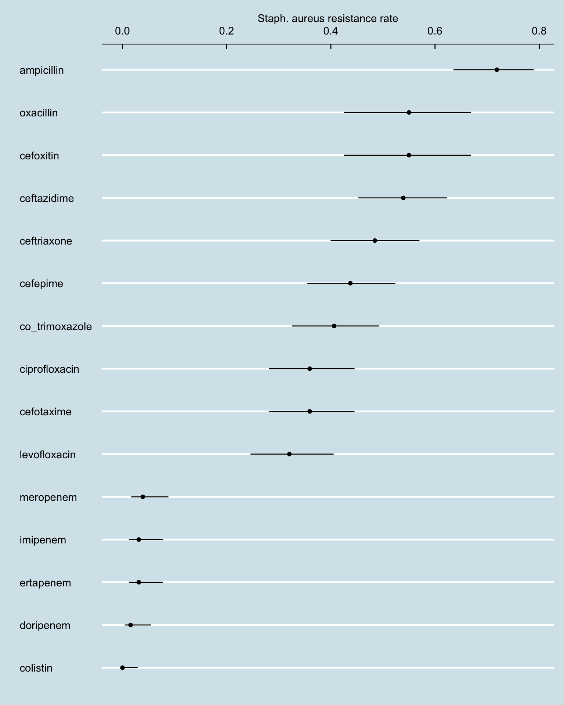

Code
df <- amrThis document outlines a stepwise approach to calculating AMR indicators from dummy data kindly supplied by PHA.
There are x steps
EDA (exploratory data analysis of raw data) - this involves cleaning, visualisation and creation of relevant variables.
Review of indicator definitions
Numerator
Denominator
Method for calculating numerator and denominator values from dataset. The outline uses R code for reproducibility and flexibility.
Calculating indicator values and uncertainty intervals
Suggested indicator visualisations (if appropriate).
Percentage of bloodstream infection due to methicillin-resistant Staphylococcus aureus (MRSA)
Numerator: No. of patients with growth of methicillin-resistant S. aureus in tested blood samples
Denominator: Total No. of patients with growth of S. aureus in tested blood samples
Percentage of bloodstream infection due to 3rd-generation cephalosporin resistant E. coli
Numerator: No. of patients with growth of 3rd-generation cephalosporin resistant E. coli in tested blood samples
Denominator: Total No. of patients with growth of E. coli in tested blood samples
df <- amr334 observations
amr <- amr[, `:=` (five_year = cut(age_year, breaks = seq(0, 100, 5), right = FALSE))][]
head(amr) record_number sample_no patient_mrn location
<num> <char> <char> <char>
1: 1 ###### ##### Outpatient
2: 17 ###### ##### Inpatient
3: 20 ###### ##### Inpatient
4: 25 ###### ##### Inpatient
5: 43 ###### ##### Outpatient
6: 63 ###### ##### Outpatient
patient_hospitalized
<char>
1: Patient had NOT been admitted for more than 2 days in the past 30 days
2: Patient has been hospitalized for 2 days or less
3: Patient has been hospitalized for more than 2 days
4: Patient has been hospitalized for 2 days or less
5: Patient had NOT been admitted for more than 2 days in the past 30 days
6: Patient had NOT been admitted for more than 2 days in the past 30 days
specific_location age_year community_origin site first_name second_name
<char> <num> <char> <char> <char> <char>
1: Emergency Room 0 Community Origin Blood #### #####
2: Intensive Care Unit 71 Community Origin Blood #### #####
3: Intensive Care Unit 44 Hospital Origin Blood #### #####
4: Intensive Care Unit 67 Community Origin Blood #### #####
5: Emergency Room 67 Community Origin Blood #### #####
6: Emergency Room 92 Community Origin Blood #### #####
family_name national_iqama_id nationality pathogen_name minocycline
<char> <char> <char> <char> <lgcl>
1: #### ########## ##### Escherichia coli NA
2: #### ########## ##### Escherichia coli NA
3: #### ########## ##### Escherichia coli NA
4: #### ########## ##### Escherichia coli NA
5: #### ########## ##### Escherichia coli NA
6: #### ########## ##### Escherichia coli NA
tigecycline ampicillin penicillin_g oxacillin cefoxitin cefotaxime
<lgcl> <char> <lgcl> <char> <char> <char>
1: NA R NA <NA> <NA> R
2: NA R NA <NA> <NA> NA
3: NA S NA <NA> <NA> S
4: NA R NA <NA> <NA> R
5: NA R NA <NA> <NA> NA
6: NA R NA <NA> <NA> NA
ceftazidime ceftriaxone cefixime cefepime doripenem ertapenem imipenem
<char> <char> <lgcl> <char> <char> <char> <char>
1: R R NA R NA S S
2: S S NA S NA S S
3: S S NA S NA S S
4: R R NA R NA S S
5: I S NA S NA S S
6: R R NA R R S S
meropenem co_trimoxazole azithromycin amikacin gentamicin ciprofloxacin
<char> <char> <lgcl> <lgcl> <lgcl> <char>
1: S S NA NA NA S
2: S S NA NA NA S
3: S S NA NA NA S
4: S R NA NA NA S
5: S S NA NA NA S
6: S R NA NA NA R
levofloxacin colistin spectinomycin five_year
<char> <char> <lgcl> <fctr>
1: S NA NA [0,5)
2: S S NA [70,75)
3: S NA NA [40,45)
4: S NA NA [65,70)
5: S S NA [65,70)
6: R S NA [90,95)This step removes identifiers (names, record IDs)
amr <- amr |> select(-c(family_name, first_name, sample_no, patient_mrn, second_name, national_iqama_id, nationality))amr_long <- amr |>
pivot_longer(names_to = "antibiotic_test", values_to = "resistance", cols = minocycline:spectinomycin) |> setDT()amr_long <- amr_long[, gen_3 := case_when(str_detect(antibiotic_test, "cef") ~ "3rd-gen", TRUE ~ "other")][]gtsummary::tbl_summary(amr)amr_freq <- amr_long[pathogen_name == "Escherichia coli", .N, by = .(five_year, gen_3, resistance, pathogen_name)]
collapsibleTreeSummary(amr_freq,
c("gen_3", "resistance"),
root = "E. coli",
nodeSize = "N",
attribute = "N",
fontSize = 16,
collapsed = FALSE)amr_long record_number location
<num> <char>
1: 1 Outpatient
2: 1 Outpatient
3: 1 Outpatient
4: 1 Outpatient
5: 1 Outpatient
---
7678: 1210 Inpatient
7679: 1210 Inpatient
7680: 1210 Inpatient
7681: 1210 Inpatient
7682: 1210 Inpatient
patient_hospitalized
<char>
1: Patient had NOT been admitted for more than 2 days in the past 30 days
2: Patient had NOT been admitted for more than 2 days in the past 30 days
3: Patient had NOT been admitted for more than 2 days in the past 30 days
4: Patient had NOT been admitted for more than 2 days in the past 30 days
5: Patient had NOT been admitted for more than 2 days in the past 30 days
---
7678: Patient has been hospitalized for more than 2 days
7679: Patient has been hospitalized for more than 2 days
7680: Patient has been hospitalized for more than 2 days
7681: Patient has been hospitalized for more than 2 days
7682: Patient has been hospitalized for more than 2 days
specific_location age_year community_origin site pathogen_name
<char> <num> <char> <char> <char>
1: Emergency Room 0 Community Origin Blood Escherichia coli
2: Emergency Room 0 Community Origin Blood Escherichia coli
3: Emergency Room 0 Community Origin Blood Escherichia coli
4: Emergency Room 0 Community Origin Blood Escherichia coli
5: Emergency Room 0 Community Origin Blood Escherichia coli
---
7678: Non Intensive Unit 96 Hospital Origin Blood Staphylococcus aureus
7679: Non Intensive Unit 96 Hospital Origin Blood Staphylococcus aureus
7680: Non Intensive Unit 96 Hospital Origin Blood Staphylococcus aureus
7681: Non Intensive Unit 96 Hospital Origin Blood Staphylococcus aureus
7682: Non Intensive Unit 96 Hospital Origin Blood Staphylococcus aureus
five_year antibiotic_test resistance gen_3
<fctr> <char> <char> <char>
1: [0,5) minocycline <NA> other
2: [0,5) tigecycline <NA> other
3: [0,5) ampicillin R other
4: [0,5) penicillin_g <NA> other
5: [0,5) oxacillin <NA> other
---
7678: [95,100) gentamicin <NA> other
7679: [95,100) ciprofloxacin R other
7680: [95,100) levofloxacin R other
7681: [95,100) colistin NA other
7682: [95,100) spectinomycin <NA> otherPHEindicatormethods R package)amr_long[pathogen_name == "Staphylococcus aureus" & !is.na(resistance), .N, by = .(resistance)] |>
pivot_wider(names_from = resistance, values_from = N) |>
rowwise() |>
mutate(total_tests = sum(c_across(S:I), na.rm = TRUE),
resistance_rate = R / total_tests)# A tibble: 1 × 6
# Rowwise:
S `NA` R I total_tests resistance_rate
<int> <int> <int> <int> <int> <dbl>
1 947 281 545 11 1784 0.305by antibiotic
options(digits = 2)
amr_res_ci_sa <- amr_long[pathogen_name == "Staphylococcus aureus" & !is.na(resistance), .N, by = .(antibiotic_test, resistance)] |>
pivot_wider(names_from = resistance, values_from = N, values_fill = 0) |>
rowwise() |>
mutate(total_tests = sum(c_across(S:I), na.rm = TRUE),
resistance_rate = R / total_tests)
phe_proportion(amr_res_ci_sa, R, total_tests) |>
bind_cols(amr_res_ci_sa) |>
ggplot() +
geom_point(aes(reorder(antibiotic_test, value), value)) +
geom_linerange(aes(antibiotic_test, ymin = lowercl, ymax = uppercl)) +
coord_flip() +
labs(y = "Staph. aureus resistance rate", x = "") +
scale_y_continuous(position = "right")New names:
• `R` -> `R...1`
• `total_tests` -> `total_tests...2`
• `R` -> `R...12`
• `total_tests` -> `total_tests...14`
by age
amr_res_ci_age <- amr_long[pathogen_name == "Staphylococcus aureus" & !is.na(resistance), .N, by = .(five_year, resistance)] |>
pivot_wider(names_from = resistance, values_from = N, values_fill = 0) |>
rowwise() |>
mutate(total_tests = sum(c_across(S:I), na.rm = TRUE),
resistance_rate = R / total_tests)
phe_proportion(amr_res_ci_age, R, total_tests) |>
bind_cols(amr_res_ci_age) |>
ggplot() +
geom_point(aes(reorder(five_year, value), value)) +
geom_linerange(aes(five_year, ymin = lowercl, ymax = uppercl)) +
coord_flip() +
labs(y = "Staph. aureus resistance rate", x = "") +
scale_y_continuous(position = "right")New names:
• `R` -> `R...1`
• `total_tests` -> `total_tests...2`
• `R` -> `R...12`
• `total_tests` -> `total_tests...14`
amr_res_ci_ec <- amr_long[str_detect(pathogen_name, "coli") & !is.na(resistance), .N, by = .(antibiotic_test, resistance, gen_3)] |>
pivot_wider(names_from = resistance, values_from = N, values_fill = 0) |>
rowwise() |>
mutate(total_tests = sum(c_across(R:I), na.rm = TRUE),
resistance_rate = R / total_tests)
phe_proportion(amr_res_ci_ec, R, total_tests) |>
bind_cols(amr_res_ci_ec) |>
ggplot() +
geom_point(aes(reorder(antibiotic_test, value), value, colour = gen_3)) +
geom_linerange(aes(antibiotic_test, ymin = lowercl, ymax = uppercl)) +
coord_flip() +
labs(y = "E. coli resistance rate", x = "") + scale_y_continuous(position = "right")New names:
• `R` -> `R...1`
• `total_tests` -> `total_tests...2`
• `R` -> `R...11`
• `total_tests` -> `total_tests...15`
amr[, .SD, .SDcols = c("record_number", "location", "patient_hospitalized", "specific_location", "community_origin", "site", "pathogen_name", "five_year")] record_number location
<num> <char>
1: 1 Outpatient
2: 17 Inpatient
3: 20 Inpatient
4: 25 Inpatient
5: 43 Outpatient
---
330: 1218 Inpatient
331: 1159 Outpatient
332: 1183 Outpatient
333: 1160 Outpatient
334: 1210 Inpatient
patient_hospitalized
<char>
1: Patient had NOT been admitted for more than 2 days in the past 30 days
2: Patient has been hospitalized for 2 days or less
3: Patient has been hospitalized for more than 2 days
4: Patient has been hospitalized for 2 days or less
5: Patient had NOT been admitted for more than 2 days in the past 30 days
---
330: Patient has been hospitalized for 2 days or less
331: Patient had NOT been admitted for more than 2 days in the past 30 days
332: Patient had NOT been admitted for more than 2 days in the past 30 days
333: Patient had NOT been admitted for more than 2 days in the past 30 days
334: Patient has been hospitalized for more than 2 days
specific_location community_origin site pathogen_name
<char> <char> <char> <char>
1: Emergency Room Community Origin Blood Escherichia coli
2: Intensive Care Unit Community Origin Blood Escherichia coli
3: Intensive Care Unit Hospital Origin Blood Escherichia coli
4: Intensive Care Unit Community Origin Blood Escherichia coli
5: Emergency Room Community Origin Blood Escherichia coli
---
330: Non Intensive Unit Community Origin Blood Escherichia coli
331: Emergency Room Community Origin Blood Staphylococcus aureus
332: Out Patient Department Community Origin Blood Staphylococcus aureus
333: Emergency Room Community Origin Blood Escherichia coli
334: Non Intensive Unit Hospital Origin Blood Staphylococcus aureus
five_year
<fctr>
1: [0,5)
2: [70,75)
3: [40,45)
4: [65,70)
5: [65,70)
---
330: [80,85)
331: [85,90)
332: [85,90)
333: [90,95)
334: [95,100)